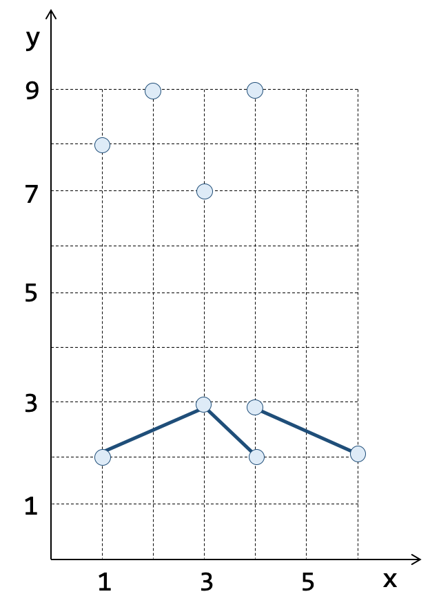
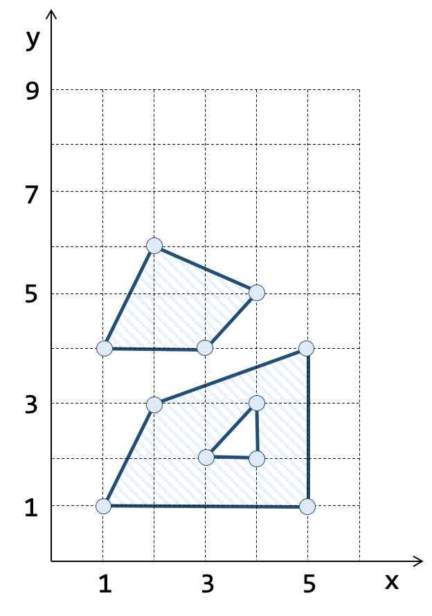
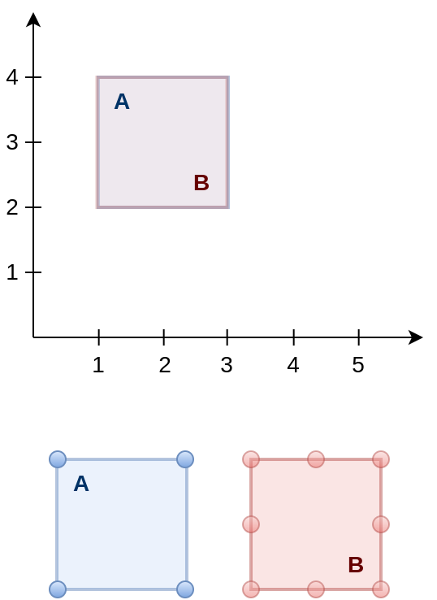

1.7. PostGIS Geometry
A extensão PostGIS introduz o tipo PostGIS Geometry para representação de geometrias no Plano Cartesiano. As operações sobre esse tipo são sempre realizadas em 2D, mesmo se a geometria possuir valores de coordenada \(z\) ou \(m\). Além disso, as operações como área e perímetro são realizadas na unidade do sistema de referência espacial associada à geometria. Isso significa que se as coordenadas forem expressas em graus, por exemplo, é necessário realizar uma transformação para um sistema de coordenadas onde seja possível calcular essa área ou perímetro em uma unidade de medida métrica.
1.7.1. Representação WKT
A especificação OGC-SFS [7] define uma notação textual conhecida por Well-Know Text ou WKT, que permite representar elementos geométricos tais como geometrias elementares (pontos, linhas e polígonos) e coleções homogêneas de geometrias (coleção de pontos, coleção de linhas e coleção de polígonos), conforme pode ser visto na Tabela 1.3.
( a ) Geometrias Simples |
( b ) Coleções Pontos e Linhas |
( c ) Coleções Polígonos |
|
 |
 |

Na notação WKT, o ponto de coordenadas \(x = 1\) e \(y = 8\), mostrado na Tabela 1.3a, é descrito pela seguinte cadeia de caracteres ou string:
POINT(1 8)
A linha definida a partir de interpolações lineares de três vértices consecutivos mostrada na Tabela 1.3a é descrita pela seguinte string:
LINESTRING(1 5, 3 6, 4 5)
O polígono simples, formado por um anel externo e um anel interno, mostrado na Tabela 1.3a é descrito pela seguinte string:
POLYGON( (1 1, 2 3, 5 4, 5 1, 1 1), (3 2, 4 3, 4 2, 3 2) )
A coleção de pontos mostrada na Tabela 1.3b, é descrita por:
MULTIPOINT(1 8, 3 7, 4 9, 2 9)
A coleção de linhas (Tabela 1.3b), é descrita por:
MULTILINESTRING( (1 2, 3 3, 4 2), (4 3, 6 2) )
Finalmente, a coleção de polígonos (Tabela 1.3c), é descrita por:
MULTIPOLYGON( ( (1 4, 2 6, 4 5, 3 4, 1 4) ),
( (1 1, 2 3, 5 4, 5 1, 1 1), (3 2, 4 3, 4 2, 3 2) ) )
1.7.2. Criando Geometrias
A função ST_GeomFromText permite criar uma geometria a partir de uma string na notação Well-Know Text ou WKT. Os exemplos de consulta SQL abaixo mostram como utilizar esta função para criação das geometrias apresentadas na Tabela 1.3.
1. Criando um ponto de coordenadas \(x = 1\) e \(y = 8\) (Tabela 1.3a):
SELECT ST_GeomFromText('POINT(1 8)');
2. Criando uma linha definida a partir de três vértices (Tabela 1.3a):
SELECT ST_GeomFromText('LINESTRING(1 5, 3 6, 4 5)');
3. Criando um polígono simples com um anel externo e um anel interno (Tabela 1.3a):
SELECT ST_GeomFromText('POLYGON( (1 1, 2 3, 5 4, 5 1, 1 1),
(3 2, 4 3, 4 2, 3 2) )');
4. Criando uma coleção de pontos (Tabela 1.3b):
SELECT ST_GeomFromText('MULTIPOINT(1 8, 3 7, 4 9, 2 9)');
5. Criando uma coleção de linhas (Tabela 1.3b):
SELECT ST_GeomFromText('MULTILINESTRING( (1 2, 3 3, 4 2),
(4 3, 6 2) )');
6. Criando uma coleção de polígonos (Tabela 1.3c):
SELECT ST_GeomFromText('MULTIPOLYGON( ( (1 4, 2 6, 4 5, 3 4, 1 4) ),
( (1 1, 2 3, 5 4, 5 1, 1 1),
(3 2, 4 3, 4 2, 3 2) ) )');
1.7.3. Operadores Métricos
1. Qual a área do polígono mostrado na figura abaixo?
SELECT ST_Area(
'POLYGON( (1 1, 2 3, 5 4, 5 1, 1 1),
(3 2, 4 3, 4 2, 3 2) )'
);
|
2. Qual o perímetro do polígono mostrado na figura abaixo?
SELECT ST_Perimeter(
ST_GeomFromText(
'POLYGON( (1 1, 2 3, 5 4, 5 1, 1 1),
(3 2, 4 3, 4 2, 3 2) )'
)
);
|
3. Qual o comprimento da linha mostrada na figura abaixo?
SELECT ST_Length( 'LINESTRING( 1 2, 3 3, 4 2 )' );
|
4. Qual a distância entre as geometrias A e B?
SELECT ST_Distance(
'LINESTRING( 1 5, 3 6, 4 5 )',
'POLYGON( (1 1, 2 3, 5 4, 5 1, 1 1),
(3 2, 4 3, 4 2, 3 2) )'
);
|
1.7.4. Operadores Conjunto
1. O operador ST_Intersection computa a geometria de intersecção entre duas geometrias.
SELECT ST_AsText(
ST_Intersection(
ST_GeomFromText( 'POLYGON( (1 2, 1 4, 3 4, 3 2, 1 2) )' ),
ST_GeomFromText( 'POLYGON( (2 1, 2 3, 4 3, 4 1, 2 1) )' )
)
);
|
2. O operador ST_Union computa a geometria formada pela união de outras duas geometrias.
|
SELECT ST_AsText(
ST_Union(
ST_GeomFromText( 'POLYGON( (1 2, 1 4, 3 4, 3 2, 1 2) )' ),
ST_GeomFromText( 'POLYGON( (2 1, 2 3, 4 3, 4 1, 2 1) )' )
)
);
|

3. O operador ST_Difference computa a geometria formada pela diferença entre a geometria A e a geometria B.
SELECT ST_AsText(
ST_Difference(
ST_GeomFromText( 'POLYGON( (1 2, 1 4, 3 4, 3 2, 1 2) )' ),
ST_GeomFromText( 'POLYGON( (2 1, 2 3, 4 3, 4 1, 2 1) )' )
)
);
|
Nota
O operador ST_SymDifference computa a geometria formada pela diferença simétrica entre duas geometrias.
1.7.5. Relacionamentos Espaciais
Entre as operações definidas na OGC-SFS [7], existe um conjunto que merece uma atenção especial: os operadores topológicos. Esses operadores são amplamente utilizados na construção de consultas espaciais envolvendo o relacionamento espacial entre objetos geográficos.
Suponha dois conjuntos de dados, um representando os limites municipais (Tabela 1.4a) e outro os focos de queimadas na vegetação (Tabela 1.4b). Para relacionar os focos de queimadas aos municípios, precisamos ser capazes de estabelecer um relacionamento espacial entre as geometrias dos municípios e as geometrias dos focos.
( a ) Municípios Brasileiros |
( b ) Focos de Queimadas na Vegetação |
|---|---|
|

Todos os sistemas baseados em SQL suportam um conjunto com pelo menos 08 operadores: Equals, Touches, Crosses, Within, Contains, Overlaps, Disjoint, e Intersects.
1. O relacionamento espacial ST_Equals permite saber se duas geometrias A e B são toplogicamente iguais.
 |
SELECT ST_Equals(
ST_GeomFromText( 'POLYGON( (1 2, 1 4, 3 4, 3 2, 1 2) )' ),
ST_GeomFromText( 'POLYGON( (1 2, 1 3, 1 4, 2 4, 3 4, 3 3, 3 2, 2 2, 1 2) )' )
);
|
2. O relacionamento espacial ST_Touches diz se duas geometrias se tocam.
SELECT ST_Touches(
ST_GeomFromText( 'POLYGON( (1 2, 1 4, 3 4, 3 2, 1 2) )' ),
ST_GeomFromText( 'POLYGON( (3 1, 3 3, 5 3, 5 1, 3 1) )' )
);
|
3. O relacionamento espacial ST_Crosses diz se duas geometrias se cruzam.
SELECT ST_Crosses(
ST_GeomFromText( 'POLYGON( (1 2, 1 4, 3 4, 3 2, 1 2) )' ),
ST_GeomFromText( 'LINESTRING( 2 3, 4 3, 5 1 )' )
);
|
4. O relacionamento espacial ST_Within diz se a geometria A encontra-se dentro da geometria B.
SELECT ST_Within(
ST_GeomFromText( 'POLYGON( (2 2, 2 3, 3 3, 3 2, 2 2) )' ),
ST_GeomFromText( 'POLYGON( (1 1, 1 4, 5 4, 5 1, 1 1) )' )
);
SELECT ST_Within(
ST_GeomFromText( 'POLYGON( (4 2, 4 3, 5 3, 5 2, 4 2) )' ),
ST_GeomFromText( 'POLYGON( (1 1, 1 4, 5 4, 5 1, 1 1) )' )
);
|
5. O relacionamento espacial ST_Contains diz se a geometria A contém a geometria B.
6. O relacionamento espacial ST_Overlaps diz se duas geometrias se sobrepõem.
SELECT ST_Overlaps(
ST_GeomFromText( 'POLYGON( (1 2, 1 4, 3 4, 3 2, 1 2) )' ),
ST_GeomFromText( 'POLYGON( (2 1, 2 3, 4 3, 4 1, 2 1) )' )
);
|
7. O relacionamento espacial ST_Disjoint diz se duas geometrias são disjuntas, isto é, se elas não possuem nenhuma interação espacial.
8. O relacionamento espacial ST_Intersects diz se a geometria A possui algum tipo de interação espacial com a geometria B.
Nota
Os operadores topológicos são definidos com base no formalismo matemático conhecido como Matriz de 9-Intersecções Estendida Dimensionalmente (DE-9IM) [14].